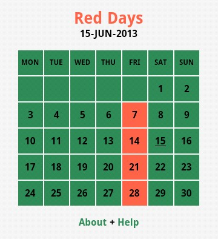

Red Days | 限行助手
Download | 下载

Red Days is an app for Android smartphone to remind the drivers of Beijing China not to drive in no-driving days (red days).
限行助手是一个安卓手机应用软件，用来提醒中国北京的驾驶员不要在限行日驾驶。
Donate to Author | 向作者捐赠